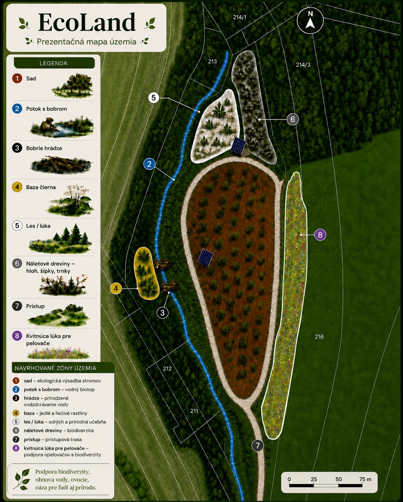

Ovocný sad
Pestovateľský a edukačný potenciál – tradičné ovocné druhy, starostlivosť o stromoradie a rozmanitosť opeľovačov.
Osem prírodných zón v jednom celku: ovocný sad, potok s bobrom, dve hrádze, bazový breh, lesík, remízky, prístup a kvitnúca lúka pre opeľovače.
Jednotlivé zóny sa navzájom dopĺňajú a tvoria vzácnu krajinnú mozaiku. Ich charakter ponúka široké možnosti využitia od sadovníctva po vzdelávanie a citlivé zážitky v prírode.
Pestovateľský a edukačný potenciál – tradičné ovocné druhy, starostlivosť o stromoradie a rozmanitosť opeľovačov.
Potok s bobrom a dvoma hrádzami ponúka osobitú tému pre vodnú edukáciu, monitoring a ochranu biotopov.
Tichý priestor pre pozorovanie prírody, odborné prechádzky a nízkokapacitné aktivity.
Porasty pri brehu ako súčasť biodiverzity i možný edukačný a pestovateľský motív.
Hloh, šípky a trnky vytvárajú úkryty pre vtáctvo a prirodzené spojnice v krajine.
Možnosť obnovy a údržby kvitnúcej lúky v prospech opeľovačov a mikrobiotopov.
Mapový podklad zobrazuje sad, potok s bobrom, hrádze, porasty bazy, les a lúku, remízky, prístup a kvitnúcu lúku. Prezentačná mapa s ôsmimi bodmi vychádza z mapového podkladu územia a jeho výmer.

Prezentačná mapa EcoLand Buková – osem očíslovaných zón a legenda podľa podkladov vlastníka.
Uvažuje sa o retenčnej línii približne 250 m po vrstevnici, rozšírení mokrade, samostatnej retenčnej nádrži a zachytávaní dažďovej vody z plánovaných objektov.
Retenčná línia, rozšírenie mokrade a zber vody zo senníkov predstavujú atraktívnu líniu ďalšieho rozvoja ochrany krajiny.
Príležitosť pre obnovu tradičných ovocných druhov, sezónne pestovanie, regionálne produkty a zážitkové aktivity v sade.
Vhodný námet pre environmentálne aktivity škôl, odborníkov aj firemných dobrovoľníkov.
Na území je podľa údajov vlastníka povolená realizácia dvoch A-frame senníkov s pôdorysom 6 × 4 m a jedného tiny house. Táto príprava pridáva prírodnému celku ďalší rozvojový rozmer a hodnotu pre kupujúceho.
Elegantné hospodárske objekty rešpektujúce prostredie sadu, s priestorom pre sezónne zázemie a rozvoj areálu.
Malý objekt, ktorý prirodzene zapadá do konceptu komorného pobytu uprostred krajiny.
Glamping, tematické pobyty, tiché víkendy, školy v prírode a firemné programy – smer ďalšieho rozvoja v rukách nového vlastníka.